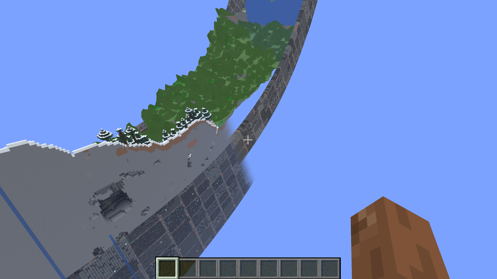
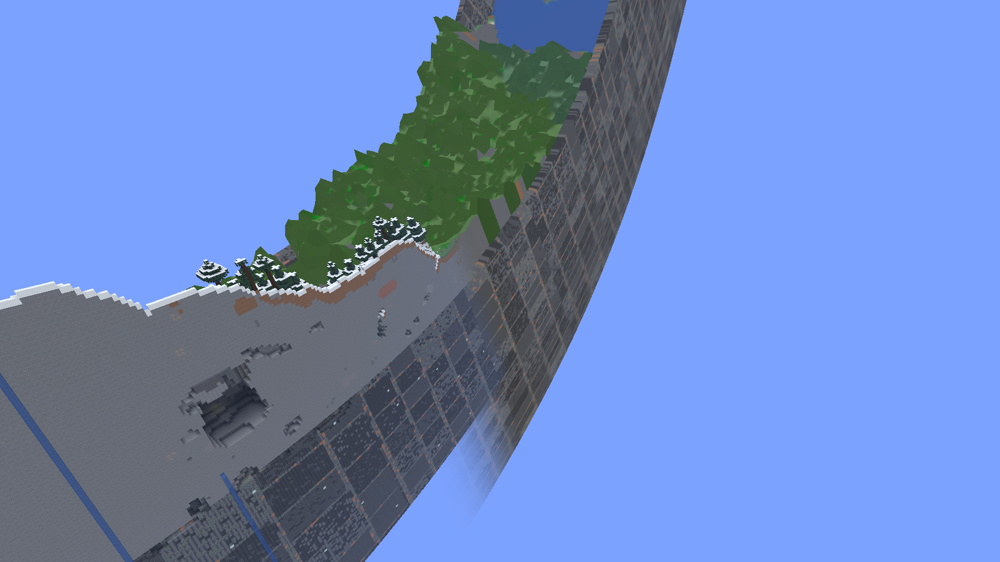

Atlas terrain and wall closure
Same saved camera on a fully generated 2,048 × 128 ring. Terrain edges are closed, decay forms a connected crest, and exterior depth follows the aligned top minus saved wall height. Study setting: 160 blocks, nominal top Y=96, bottom Y=−64. Bottom-join visual acceptance is pending.
Before and after

Before · owner screenshot, 9 October 2026Minecraft 26.1.2 · Fabric · MediumAll supported build lines and loaders
Medium is shown below. All six clients also completed Low and High captures, published coherent meshes and stopped normally. These are development captures, not frozen release qualification.
Minecraft 26.1.2 · Fabric · Medium
Minecraft 26.1.2 · Neoforge · MediumMinecraft 26.2 · Fabric · MediumMinecraft 26.2 · Neoforge · MediumMinecraft 26.3 · Fabric · MediumMinecraft 26.3 · Neoforge · MediumLow and High examples